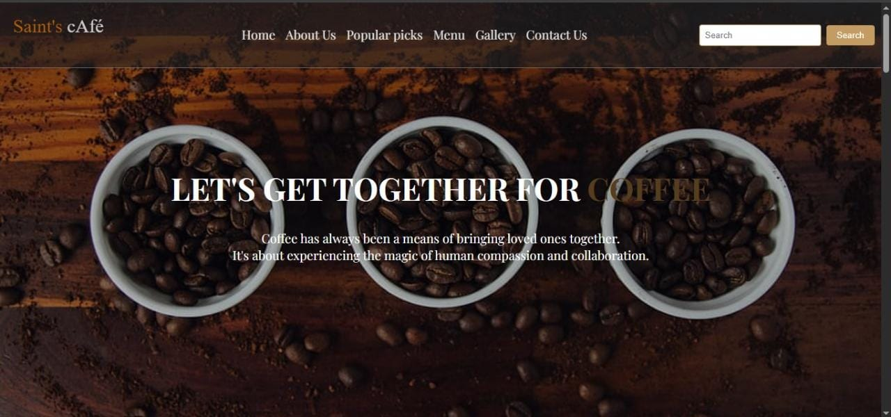

Engineer by Degree. Developer by Passion. Hacker by Curiosity.
Hey there, I'm Austin Kioko, a Financial Engineering student with a passion for technology and its power to solve real-world problems. I specialize in front-end development, crafting intuitive, responsive user interfaces using HTML, CSS, and JavaScript.
I’m actively upgrading my skills in the MERN stack — diving deep into React, Node.js, MongoDB, and Express — with the goal of becoming a proficient full-stack developer. Alongside this, I'm also sharpening my cybersecurity skills as a learning Ethical Hacker through Cisco training.
Whether it's designing sleek web experiences or exploring vulnerabilities in systems, I'm driven by curiosity, precision, and a commitment to mastering my craft.
Technical Skills
Languages
- JavaScript
- Python
- HTML5
- CSS3
Frontend
- React
- Responsive Design
Backend & Databases
- Node.js
- Express.js
- MySQL
- MongoDB
Tools
- Git
- VS Code
Interests & Focus Areas
Full-Stack Engineering
Building dynamic, end-to-end web applications with the MERN stack. This encompasses creating seamless React front-ends, designing robust Express.js and Node.js APIs, and architecting efficient data layers with both MongoDB and MySQL to deliver scalable and user-centric solutions.
Ethical Hacking & Cybersecurity
As a learning Ethical Hacker under Cisco’s cybersecurity training, I’m diving into network security, vulnerability assessment, and responsible exploitation. I'm fascinated by the mindset of attackers and defenders, and how ethical hacking plays a critical role in securing digital systems against real-world threats.
Building Impactful Technology
Driven by a passion for solving complex problems with elegant, data-informed solutions. I enjoy the process of deconstructing challenging problems and iterating on solutions that create meaningful user experiences through code.
Projects
CommunityWatch - Full Stack Community Platform

Building a zone-based issue tracking platform that connects residents with local administrators to improve urban infrastructure.
Key Features:
- Precise location pinning system with real-time issue visualization
- Anonymous issue reporting with image upload
- Admin dashboard for issue management
- Community engagement through upvoting system
Tech Stack: MERN Stack, Leaflet.js, OpenStreetMap
Status: In Development | Expected Completion: November 2025
View Project on GitHubSaints Cafe – Coffee Ordering Web App
An online ordering system for Saints Cafe, designed to provide a smooth user experience for customers to browse, customize, and order their favorite coffee blends.
Key Features:
- Menu with filtering and dynamic pricing
- Interactive cart system
- Mobile-first responsive layout
- Contactless pickup & table booking options
Tech Stack: HTML5, CSS3, JavaScript
Status: In Development | Beta Launch: January 2026
View Project on GitHubContact Me
Have a question, collaboration idea, or just want to connect? I'd love to hear from you!
You can email me directly at:
austinkioko506@gmail.com